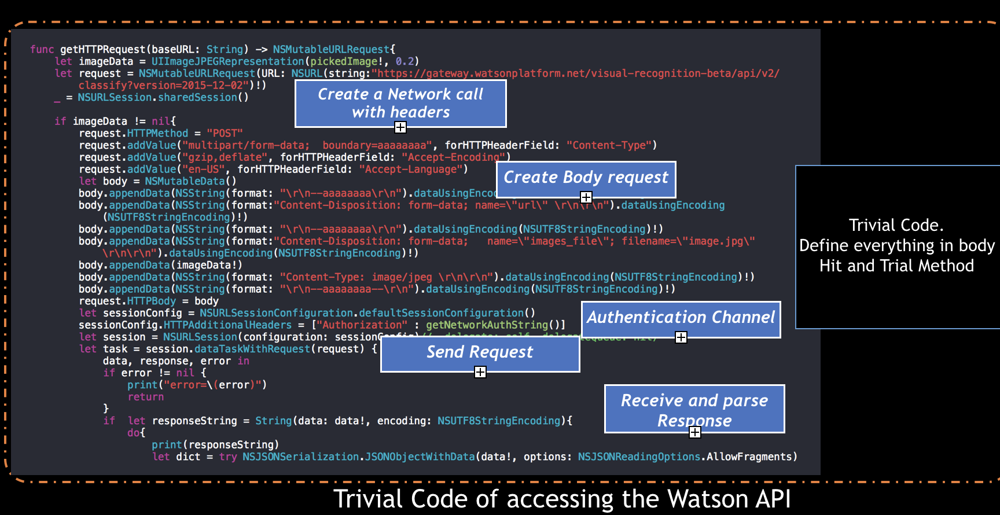
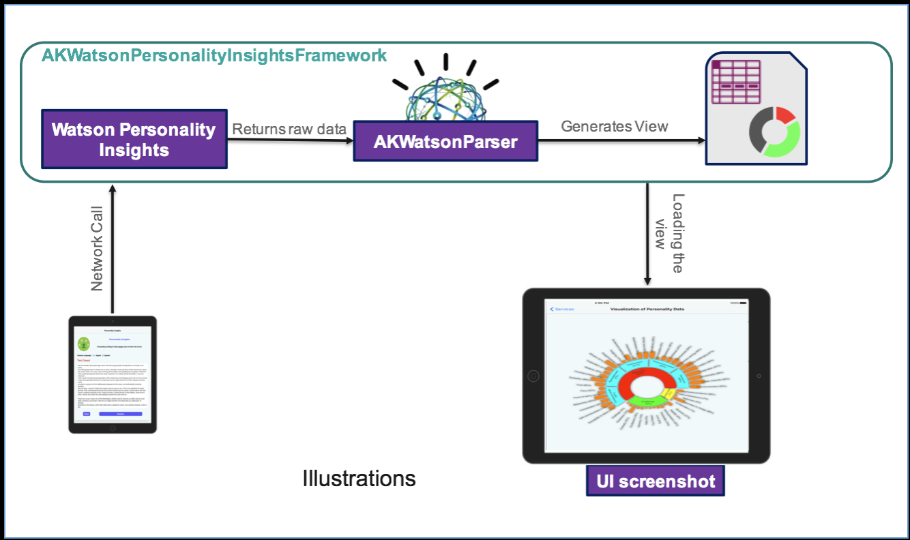
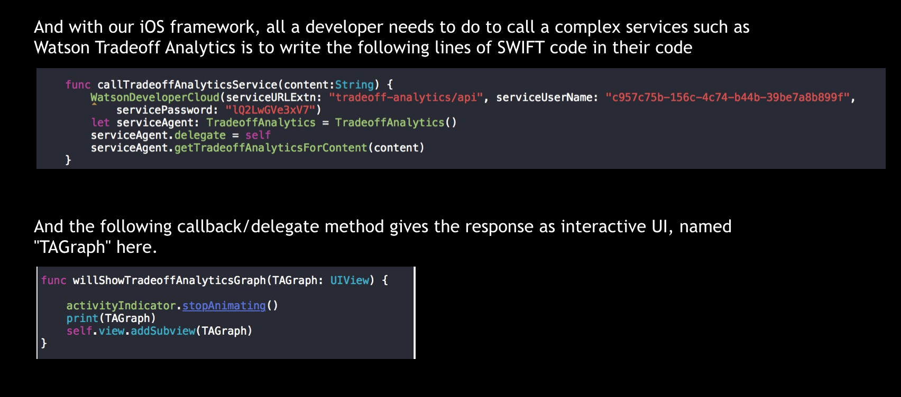

Watson developer Cloud
| Client- | IBM Research |
There are many use cases including mobile applications where these services are being consumed like Watson Personality Insights, Watson Speech to Text, Watson Text to Speech. Every service has an API document to understand “What it offers ? And How to implement it ?” but these high level API docs are not suffice for a quick mobile application implementation.
Trivial Way for calling Web API's 
To overcome this, Having a common framework for all of these WDC services with easy to understand interface methods can help developer to save considerable amount of time in development . This is one of the major reason that most of the web apps provides there mobile OS
Example Workflow Code Snippet 